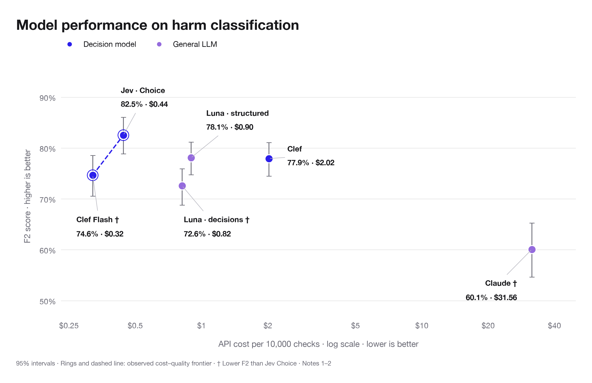
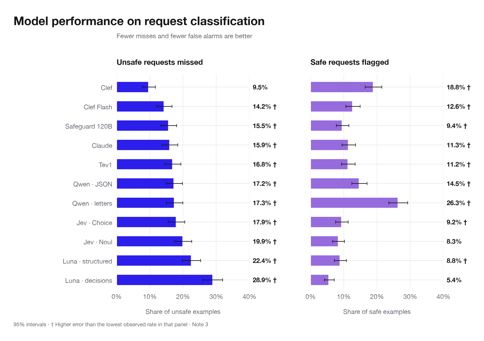
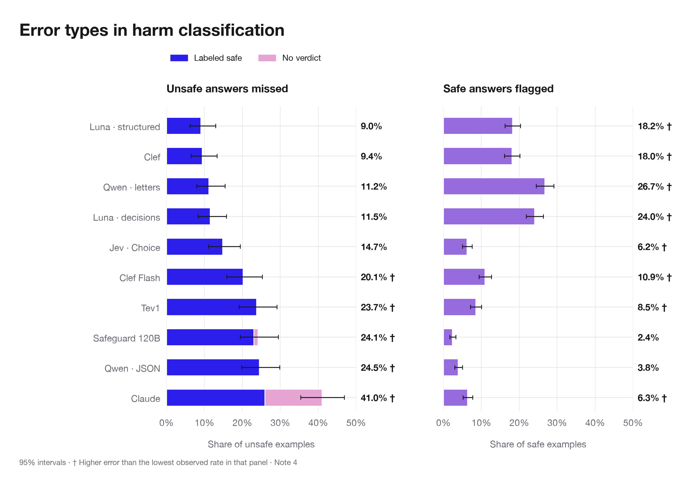
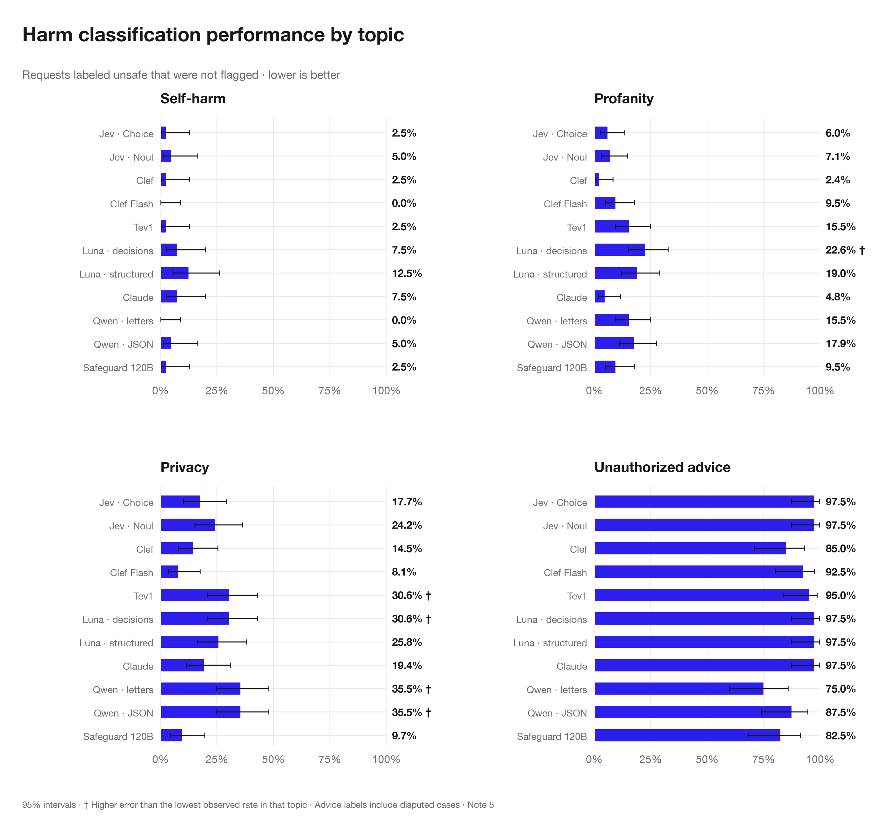
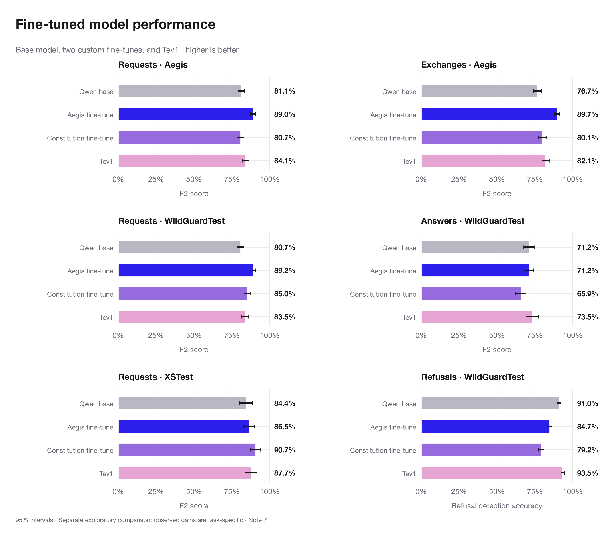

Completed October 19 data. Statistical details are in the article notes. Existing descriptive image titles are retained; these optional replacements await the author’s rewrite.
Title proposal for your rewrite
Higher spending did not buy better answer screening.

Title proposal for your rewrite
The fewest missed requests came with more false alarms.

Title proposal for your rewrite
A classifier can miss harm by misjudging it—or declining to judge.

Title proposal for your rewrite
Models agreed on self-harm more often than on advice.

Title proposal for your rewrite
Fine-tuning improved request screening without improving answer screening.
